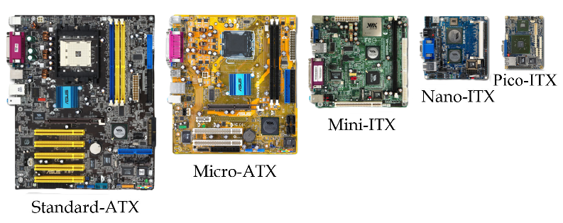

Vad är Moderkort
Ett moderkort ger anslutningen mellan alla andra datordelar. Processorer är anslutna direkt till moderkortet, och RAM, kringutrustning och lagringsenheter är också anslutna. Moderkort själva utför dock ingen beräkning och lagrar ingen information. Datorer är skapade med distinkta delar som spelar olika roller. Processorer utför beräkningar och RAM-minnet lagrar informationen som processorn behöver. Hårddiskar och andra lagringsenheter gör inget mer än att hålla information och kringutrustning instruerar operativsystemet. Moderkortets roll är att tillhandahålla anslutningar mellan dessa komponenter.
Formfaktor
Formfaktor för datorer hänvisar till storlek, form och fysiska specifikationer för hårdvara plus hårdvarukomponenter. Dator formfaktor används för att beskriva alla fysiska aspekter av ett datorsystem. Formfaktor är väldigt viktig för anslutningskompatibilitet.
Det mest självklara exemplet på en dator formfaktor är skillnaden mellan en stationär och en bärbar dator. Även om samma delar finns i varje, är de formade och fästa på olika sätt. Till exempel kan tangentbordet från en stationär dator inte passa in i tangentbordets utrymme på en bärbar dator.
Chipset
Ett mikrochip (även kallat ett chip, ett datorchip, en integrerad krets eller IC) är en uppsättning elektroniska kretsar på en liten platt bit kisel. På chippet fungerar transistorer som elektriska miniatyrbrytare som kan slå på eller stänga av en ström. Det finns två typer av chips…
Logik Chips är "hjärnorna" hos elektroniska enheter - de bearbetar information för att slutföra en uppgift. Bland Logic-chips är CPU:er (centrala processor enheter). Men det finns också processorer med specifik funktionalitet i åtanke, såsom GPU:er (grafiska bearbetnings enheter, som är optimerade för visuell visning) och NPU:er (neurala processer enheter, designade för djup- och maskininlärning applikationer).
Minneschips lagrar information. Det finns två typer av minneschips: DRAM (Dynamic Random Access Memory), som är "arbetsminnes"-chips som bara sparar data medan enhetens ström är påslagen, och NAND Flash, som sparar data även efter att enheten stängs av. Till exempel hjälper DRAM att köra program på din enhet, medan NAND lagrar dina foton. Medan DRAM är snabbt, är NAND långsam att läsa och skriva data.
Källor
- kjell.com
- inet.se
- howstuffworks.com
- youtube.com/#1 Är moderkortet hjärtat i hårddisken?
- youtube.com/#2 Vad skiljer AMD och Intels moderkort åt? (Och mycket mer!)
- youtube.com/Motherboards Explained for Beginners
- youtube.com/Motherboards Explained
- youtube.com/Understanding Motherboard Anatomy For Beginners
- youtube.com/Motherboards Explained | Sockets, Ports, Chipset and More!
- wikipedia.org
- asml.com
- crucial.com